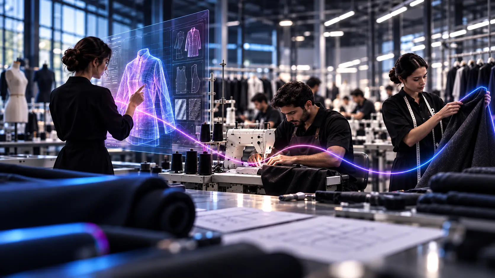
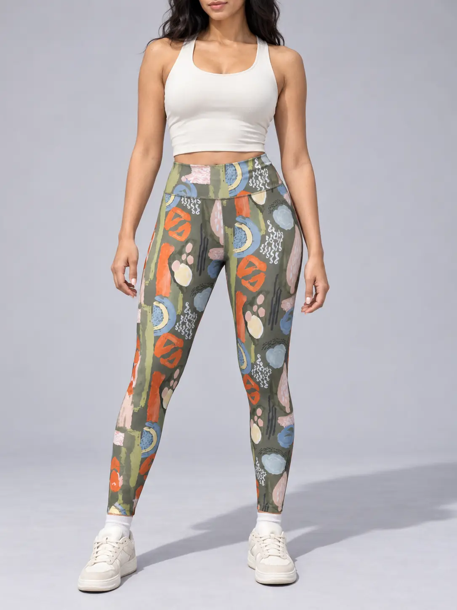
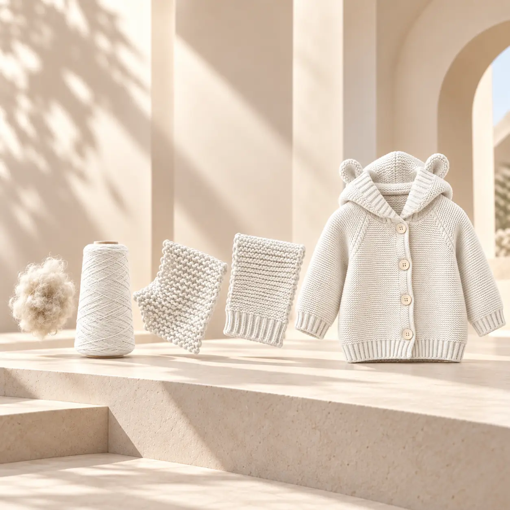
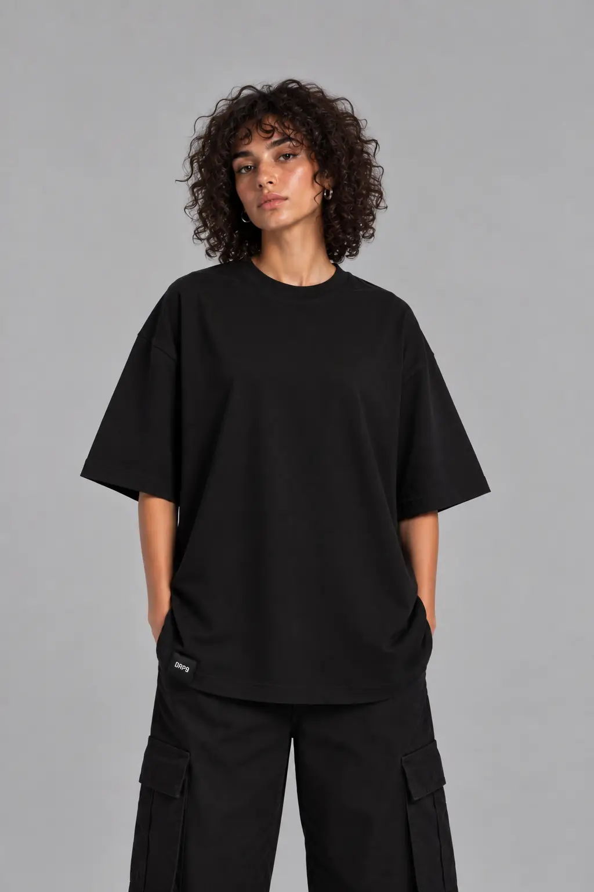
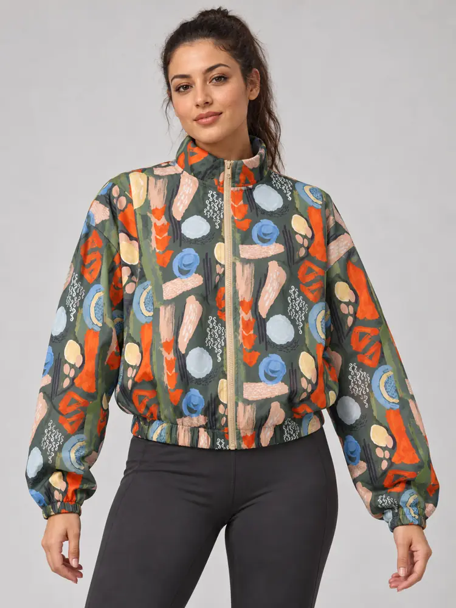
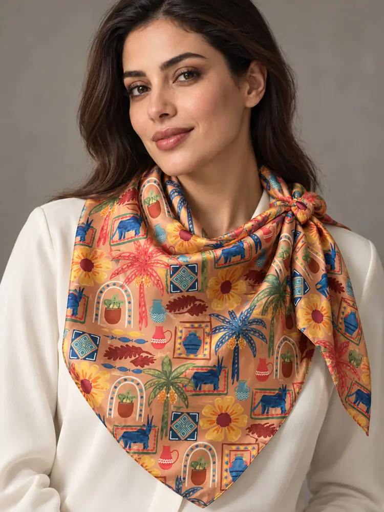

Project onboarding
Understand the client, market, quantity, and expectations.

Your end-to-end apparel manufacturing and quality-assurance partner in Egypt. One accountable team from the first brief to final delivery.

01SportswearT-shirts, shorts & leggings.View 3 products
02KnitwearCoordinated sets & baby knit jackets.View 2 products
03Everyday & lifestylePolos, T-shirts, hoodies, sets, tanks & sleepwear.View 7 products
04OuterwearStructured jackets & printed blousons.View 2 products 05Baby & kidsMuslin, fleece, sets & detailed kidswear.View 13 products
06Scarves & textile accessoriesPrinted scarves & branded tote bags.View 6 productsSeven stages, three phases. From plan to delivery, every step has an owner.
Understand the client, market, quantity, and expectations.
Review construction, materials, quality, timing, and suitability.
Define commercial scope, responsibilities, approvals, and plan.
Confirm the approved product standard before bulk production.
Verify materials, measurements, trims, branding, packing, and approvals.
Coordinate manufacturing, inspections, visibility, and corrective action.
Confirm finishing, quantities, packing, documentation, and handover.
Scroll to move through the journey.
Bulk-production timing begins after the required pre-production approvals and materials are confirmed. Each timeline is confirmed after reviewing complexity, fabric and trim availability, quantity, finishing, manufacturing allocation, sample requirements, and approval timing.
Share your product, quantity and timeline. An experienced apparel account manager will confirm the manufacturing route and the next step.